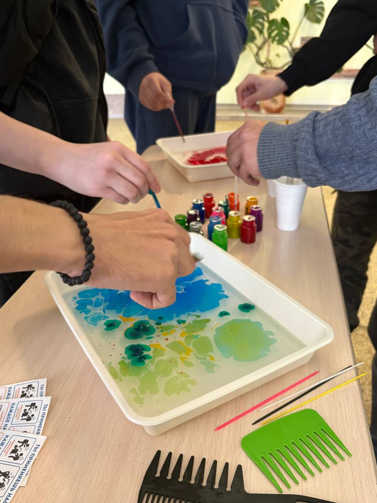
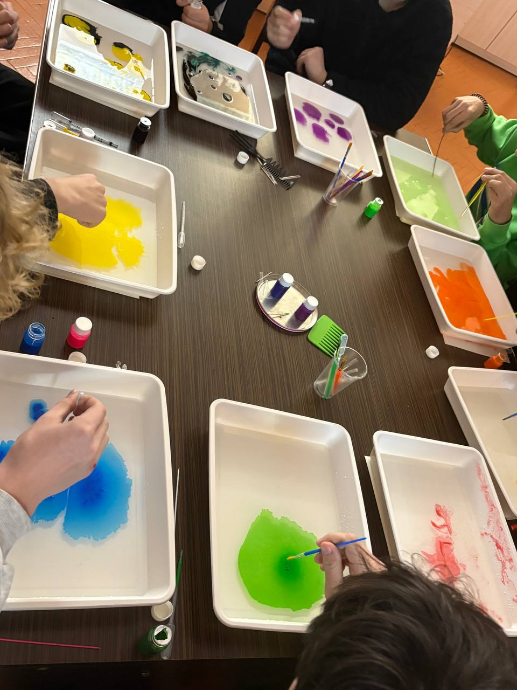
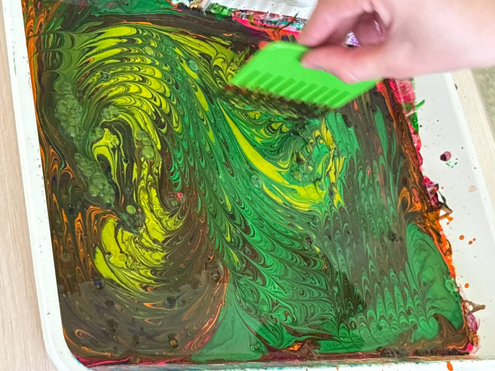
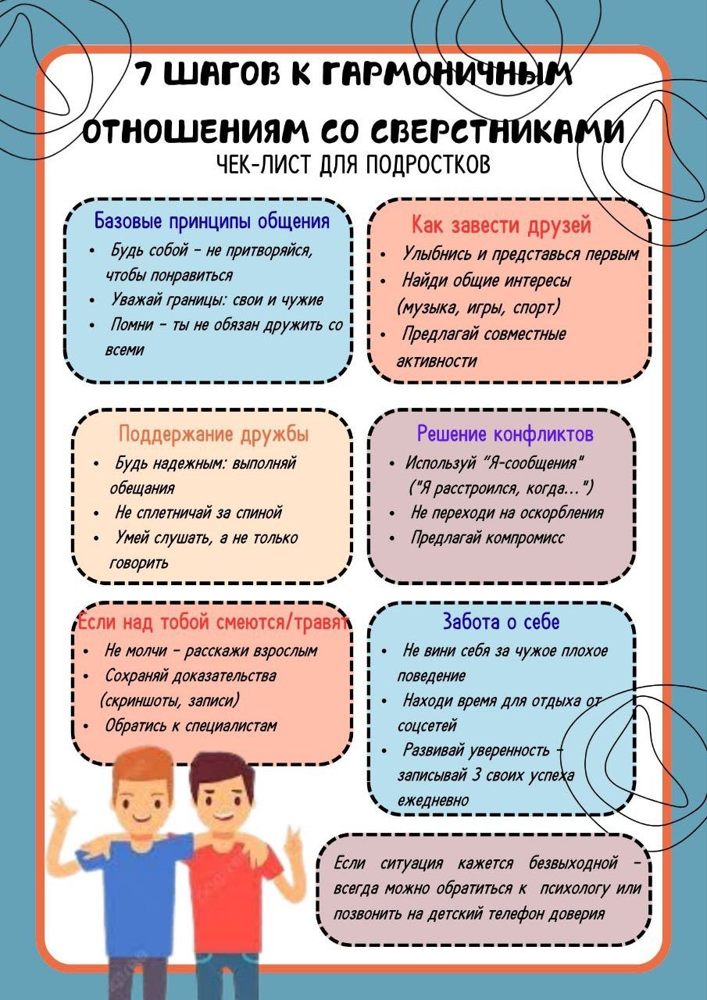
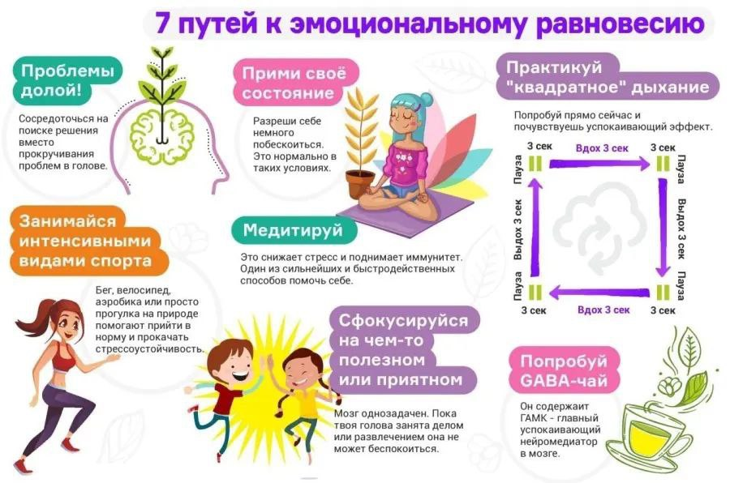
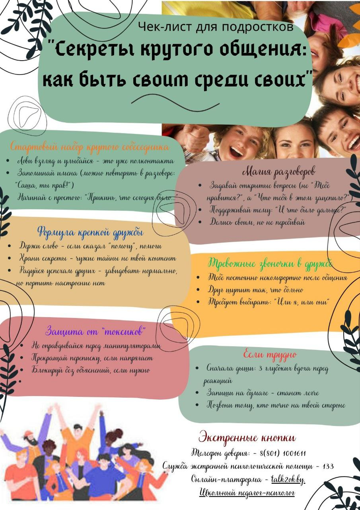
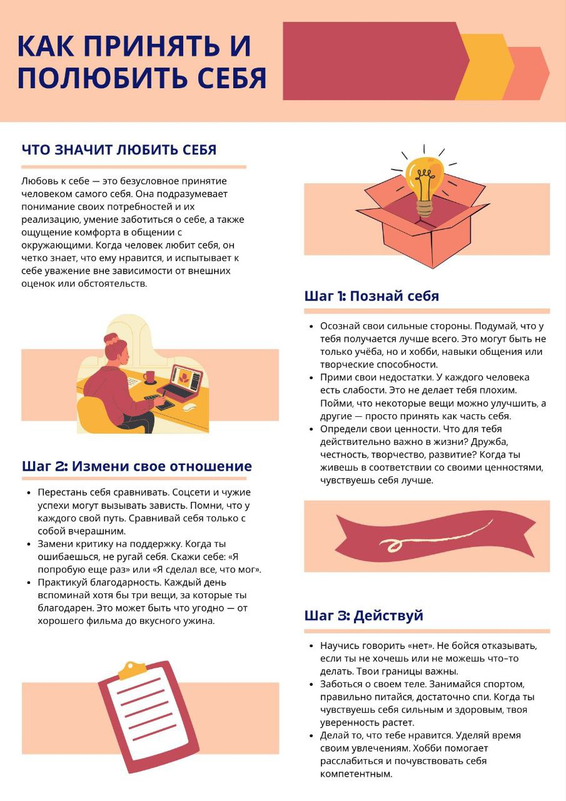
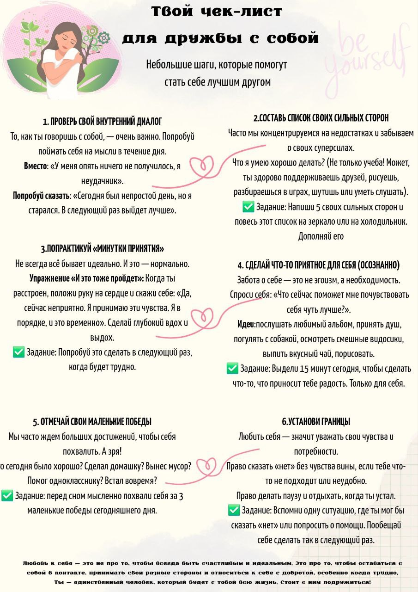
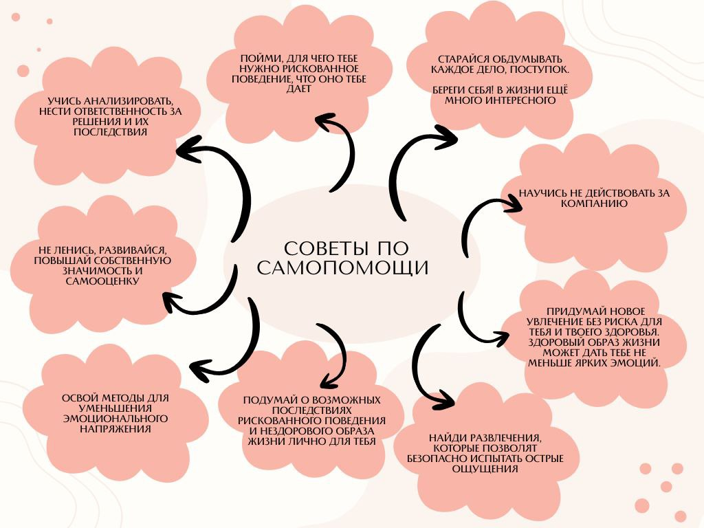
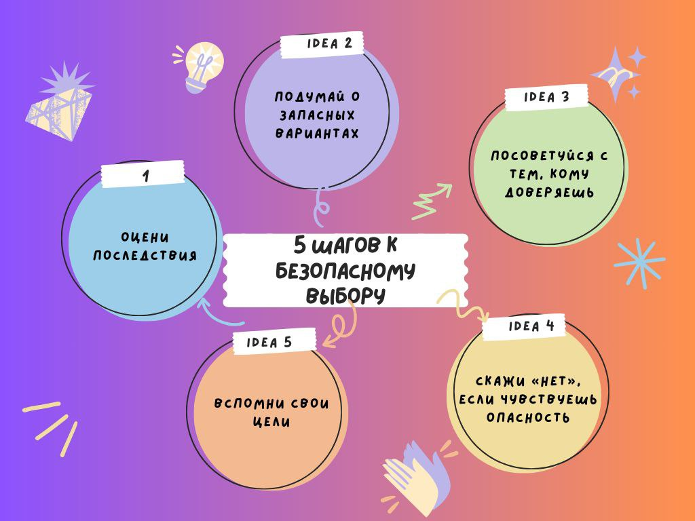

МОЛОДЕЖНЫЙ СОЦИАЛЬНЫЙ ПРОЕКТ «ТВОРЧЕСТВО ПРОТИВ ЗАВИСИМОСТИ: ЦИФРОВОЙ АРТ-ДИАЛОГ»
Проект направлен на профилактику рискованного поведения среди подростков 15–23 лет, обучающихся в колледже, посредством вовлечения их в творческую деятельность с применением цифровых инструментов.
Лекции.
ЛЕКЦИЯ 1. ПОНИМАНИЕ ФЕНОМЕНА
Для изучения лекции скачайте материал Скачать
Тест
ЛЕКЦИЯ 2. ВИДЫ И ПОСЛЕДСТВИЯ РИСКОВАННОГО ПОВЕДЕНИЯ
Для изучения лекции скачайте материал Скачать
Тест
ЛЕКЦИЯ 3. ПРОФИЛАКТИКА РИСКОВАННОГО ПОВЕДЕНИЯ ЧЕРЕЗ АЛЬТЕРНАТИВНЫЕ ФОРМЫ ДОСУГА
Для изучения лекции скачайте материал Скачать
Арт-терапия.
Как это работает:
- Когда мы рисуем, лепим или создаём что-то, эмоции выходят наружу без слов.
- Творчество снимает стресс — вместо того, чтобы «заедать» или «запивать» проблемы, ты выплёскиваешь их на бумагу или в песок.
- Ты находишь новое хобби, которое занимает время и отвлекает от плохих компаний.
- Видишь свой прогресс: сегодня нарисовал хмурое небо, завтра — солнце. Значит, настроение улучшается!
Почему это помогает отказаться от риска (алкоголь, наркотики, курение):
- даёт безопасный способ снять напряжение;
- заполняет свободное время интересным делом;
- повышает самооценку: «Я создал это сам!»;
- помогает понять, что именно тебя толкает к риску (скука, стресс, давление друзей);
- создаёт круг единомышленников — тех, кто выбирает творчество, а не вредные привычки.

Техника эбру: рисование на воде
Задание «Мой стресс — мой узор»
- Нанеси несколько капель краски на воду — пусть это будут цвета, которые ассоциируются у тебя со стрессом (например, серый, чёрный, красный).
- Гребнем создай узор — представляй, что «распутываешь» тревожные мысли.
- Перенеси изображение на бумагу.
- Теперь добавь яркие цвета (голубой, жёлтый, зелёный) — это твои ресурсы: друзья, хобби, мечты.
- Снова перенеси узор на бумагу. Сравни два рисунка. Видишь, как меняется картина, когда добавляешь «свет»?

Мандалотерапия: круги гармонии
Задание «Мандала выбора»
- Раздели круг на 4 сектора.
-
В каждом нарисуй символы:
сектор 1: что меня толкает к риску (изображения сигарет, алкоголя, толпы);
сектор 2: что я теряю из‑за этого (разбитое сердце — отношения, часы — время, книга — учёба);
сектор 3: что мне даёт силы сказать «нет» (спорт, музыка, друзья, семья);
сектор 4: мои цели (мечта о путешествии, поступление в вуз, победа в соревнованиях).
Заполни фон узорами — пусть они соединяют сектора в единую картину. - Повесь мандалу на видное место как напоминание: «У меня есть выбор».

Мандалотерапия
Задание «Ежедневная мандала»
- утром — цвет настроения;
- вечером — главный эмоция дня;
- в конце недели сравни: какие цвета встречаются чаще? Где было больше ярких оттенков? Это покажет, какие дни были удачными.
Каждый день рисуй маленькую мандалу (диаметр 10 см):
Когда использовать:
- если чувствуешь давление сверстников («Да ладно, один раз не считается!»);
- когда скучно и нечем заняться;
- чтобы проанализировать, что именно провоцирует желание рискнуть.
Как организовать занятость через арт-терапию? План на неделю:
| День | Техника | Задача |
|---|---|---|
| Понедельник | Эбру | Создать узор «Моё настроение сегодня» |
| Вторник | Мандала | Нарисовать «Круг моих ресурсов» (что/кто меня поддерживает) |
| Среда | Эбру + мандала | Перенести узор эбру на бумагу, вписать в круг, дорисовать символы успеха |
| Четверг | Мандала | «Мой безопасный мир» — место, где я чувствую себя защищённым |
| Пятница | Эбру | «Цвет моего стресса» → «Цвет моего спокойствия» (два рисунка) |
| Суббота | Творческий микс | Сделать коллаж из работ недели: вырезать фрагменты эбру и мандал, склеить в композицию «Я выбираю жизнь» |
| Воскресенье | Рефлексия |
Посмотреть все работы. Ответить на вопросы: — Какой день был самым сложным? — Где я почувствовал(а) гордость за себя? — Что точно не буду делать на следующей неделе? |
Песочная терапия: строй свою жизнь без риска.
Песочная терапия — это способ выразить свои чувства и мысли через создание композиций из песка. Не нужно уметь рисовать или лепить: ты просто строишь то, что приходит в голову, и это помогает разобраться в себе.
Как это работает:
- песок тактильно успокаивает — когда трогаешь его, снижается стресс;
- ты можешь «проиграть» сложные ситуации без слов: поссорился с другом? Построй ссору в песочнице и найди решение;
- видишь результат сразу: за 10–15 минут создаёшь целый мир;
- учишься решать проблемы: если что‑то не получилось, можно переделать — так же и в жизни.
Почему это помогает отказаться от риска (алкоголь, наркотики, курение):
- даёт безопасный способ снять напряжение — вместо того, чтобы идти «за компанию» курить, ты можешь поиграть с песком;
- заполняет свободное время интересным делом;
- повышает уверенность в себе: «Я создал целый город!» → «Я могу справиться и с другими задачами»;
- помогает понять, что именно тебя толкает к риску (скука, давление друзей, стресс);
- создаёт ощущение контроля: ты управляешь песком — значит, можешь управлять и своими решениями.
Задания:

Занятие 1. «Мой мир сейчас»
- Рассмотри фигурки. Выбери те, что отражают твою жизнь сейчас (школа, семья, друзья, хобби).
- Создай композицию в лотке: где ты сам, кто рядом, что вокруг.
- Добавь 1–2 элемента, символизирующих риск (бутылка, сигарета, группа сомнительных людей).
- Теперь измени сцену: убери или отодвинь «опасные» элементы, добавь то, что даёт защиту (дом, друг, спортплощадка).
- Расскажи (или запиши) историю получившегося мира: «Раньше здесь было… Теперь здесь есть… Я чувствую…».

Занятие 3. «Путь от риска к мечте»
- Раздели лоток на две части: левая — «Путь риска» (алкоголь/наркотики/курение); правая — «Путь мечты» (спорт, учёба, творчество).
- Укрась её «кирпичиками» из камешков/бусин — каждый символизирует твою силу: «Я умею говорить „нет“»; «У меня есть друзья, которые поддерживают»; «Я хочу стать врачом/спортсменом/музыкантом»; «Мне нравится кататься на скейте, а не стоять с сигаретой».
- Проложи дорожки от фигурки «я сейчас» к обеим зонам: по левой дорожке разложи символы проблем (больница, ссора с родителями, плохая оценка); по правой — символы достижений (медаль, диплом, гитара).
- Реши, куда пойдёт фигурка. Перемести её по выбранной дорожке.
- Дополни сцену деталями: что нужно сделать сегодня, чтобы завтра оказаться на «пути мечты»?

Занятие 5. «Город будущего без риска»
- Построй город мечты: районы спорта (стадион, велодорожки), творческие кварталы (студия звукозаписи, артмастерская), зоны отдыха (парк, кафе с настольными играми), школы/вузы.
- Убери или перестрой «опасные» зоны (бары, места тусовок с вредными привычками).
- На цветных карточках напиши: 3 мероприятия города («Фестиваль граффити», «Турнир по стритболу»), 2 правила для жителей («Говорить „нет“ алкоголю», «Помогать тем, кто хочет бросить курить»).
- Размести карточки в городе.
- Создай «команду мэра»: выбери 3 фигурки — это твои союзники в реальной жизни (друг, учитель, тренер).
Как организовать занятость через песочную терапию. План на неделю:
| День | Задача |
|---|---|
| Понедельник | «Мой мир сейчас» (15 мин утром — настрой на день) |
| Среда | «Стена против риска» (после школы — профилактика вечерних соблазнов) |
| Пятница | «Путь от риска к мечте» (планирование выходных) |
| Воскресенье | «Остров безопасности» + «Город будущего» (подведение итогов недели) |
Медитация.
Благодаря медитации мы учимся концентрации, расслабляем внимание и повышаем его. Главная цель медитации – снятие эмоционального напряжения, отвлечение от гнетущих мыслей. Если необходимо собраться и успокоиться, зачатую применяется дыхательная техника. Можно применять прием отвлечения – думается о чем угодно, кроме раздражающего обстоятельства.
Основные аспекты и преимущества медитации:
- Эмоциональное равновесие: Помогает стабилизировать работу нервной системы и снизить уровень тревожности.
- Физическое расслабление: Устраняет мышечные зажимы и способствует восстановлению работы органов.
- Техники: Распространены методы, основанные на концентрации на дыхании, сканировании тела или управляемой медитации.
- Долгосрочный эффект: Регулярная практика приводит к повышению качества жизни, улучшению самосознания и самопринятия.
Для достижения максимального эффекта требуются терпение и регулярность, так как медитация перенастраивает работу мозга. Ключевым аспектом медитации является умение сосредотачиваться на чем-то одном. Не менее важно отключить мысли, которые отвлекают от осознания настоящего момента. Возможно, вам помогут в этом специальные инструменты, например, свечи.
Как медитировать правильно?
- Найдите тихое место (на первых порах это важно).
- Медитация — не просто расслабление, а тренировка концентрации и устойчивости ума.
- Сидите удобно с прямой спиной, расслабленными плечами, не опираясь на спинку; тело расслаблено, но не до сонливости.
- Сосредоточьтесь на спокойном глубоком дыхании животом.
- Мысли будут отвлекать — это нормально. Замечайте их и мягко возвращайте внимание к дыханию или выбранному объекту.
- Можно дополнительно «просканировать» тело и отпустить напряжение.
- Завершайте медленно: осознайте ощущения, не вскакивайте сразу.
- Регулярная практика даёт накопительный эффект: со временем снижается стресс и улучшается самочувствие.
Музыкальная терапия.
Музыкальная терапия — воздействие через создание, воспроизведение или прослушивание различных звуков и мелодий, т. е. через восприятие музыки.
Музыкальная терапия — это контролируемое использование музыки в лечении, реабилитации, образовании и воспитании детей и взрослых, страдающих от соматических и психических заболеваний. Методики музыкотерапии предполагают целостное и изолированное воздействие музыки на человека через восприятие и воспроизведение звуков, объединенных в мелодии и ритмы.
Использование музыки с лечебной целью известно давно. Влияние музыки на изменения психического состояния человека описаны в древних медицинских трактатах, в различных сказках, мифах и дошли до нас из других источников устного народного творчества. В своей книге «Эффект Моцарта» Д. Кемпбелл пишет, что «танцы, звуковое тонирование и песни появились раньше, чем членораздельная речь», что указывает на высокую степень значимости звуков и музыки на жизнь человечества. Музыка является общепонятным языком, состоящим из универсальных компонентов.
Основные аспекты и преимущества медитации:
- эрготропная музыка, которая стимулирует симпатическую нервную систему и характеризуется повышенной возбудимостью организма и психики;
- трофотропная музыка снижает возбудимость, регулируется парасимпатической нервной системой и оказывает успокаивающее воздействие.
Для использования методов музыкальной терапии специалисту необходимо оборудовать кабинет музыкальной аппаратурой(музыкальный центр, аудиоколонки, микрофон, диктофон, аудиодиски с записями и др.). Для работы хорошо иметь ряд музыкальных инструментов: ударные и шумовые инструменты, колокольчики, треугольники, литавры, гонг, маракасы, металлофон, ксилофон, «шум дождя», разнообразные народные инструменты – трещотки, ложки, цимбалы; духовые инструменты – дудки, флейты, губные гармошки и т. д. Чем больше в кабинете инструментов и предметов, из которых можно извлекать звуки, тем более интересной, творческой и эффективной для клиента может быть работа.
Специальный плейлист включает музыку, гарантированно безопасную для людей любого возраста. Послушайте все композиции, чтобы выбрать лучшие на ваш взгляд и включить их в ежедневные медитации!
Моцарт — Дон Жуан
Бетховен — Лунная Соната
Бетховен — Увертюра Эдмонд
Людвиг Ван Бетховен — Симфония
Бах — Итальянский Концерт
Бах — Кантана
Брамс — Колыбельная
Брукнер — Месса Ля-Минор
Иоган Себастьян Бах — Концерт Ре-Минор Для Скрипки
Йозеф Гайдн - Симфония 45(Классическая музыка)
Клод Дебюсси — Свет Луны
Лист — Богемская Рапсодия Часть 1
Лист — Венгерская Рапсодия 2
Людвиг Ван Бетховен — Симфония 6 Часть 2
Симфония Ля-Минор
Хачатурян Сюита — Маскарад
Чайковский — Шестая Симфония Часть 3
Шопен — Мазурка 25 (Флиер) (Классическая музыка) — копия
Шопен — Ноктюрн Соль-Минор
Шопен — Прелюдия 1 Опус 28
Штраус — Вальсы
Создание игрушек антистресс.
Игрушки антистресс — это небольшие предметы, которые можно мять, крутить, перебирать в руках, чтобы снять напряжение и успокоиться.
Они помогают:
- снизить тревожность;
- сосредоточиться;
- отвлечься от плохих мыслей;
- занять руки в моменты волнения;
- заменить вредные привычки (например, привычку грызть ногти или курить).
Виды игрушек антистресс.
Сквиши — мягкие сжимаемые игрушки любой формы, наполненные мягким материалом (пенопластом, синтепоном, крахмалом). При сжатии возвращаются в исходную форму.
Фиджеткубы — кубики с разными элементами на гранях (кнопки, колёсики, переключатели). Каждый элемент даёт разный тактильный опыт.
Сенсорные мешочки — небольшие тканевые мешочки, наполненные крупами, бисером, мелкими шариками или песком. Их приятно перебирать пальцами.
Эластичные игрушки — растягивается в разные стороны, затем принимает прежнюю форму (резиновые фигурки, тянучки).
Шарыантистресс — полые резиновые шары с гелеобразным наполнителем внутри. При сжатии меняют форму и создают приятное сопротивление.
Спирографы и лабиринты — плоские или объёмные конструкции, где нужно передвигать шарик по дорожке. Требуют концентрации и успокаивают.
Магнитные конструкторы — наборы магнитных шариков или пластин, из которых можно собирать разные фигуры. Развивают моторику и воображение.
Браслетыфиджеты — браслеты с подвижными элементами (бусинами, шестерёнками), которые можно крутить на запястье.
Как использовать игрушки антистресс в повседневной жизни.
| Ситуация | Какая игрушка подойдёт | Действие |
|---|---|---|
| Перед экзаменом | Сквиши или сенсорный мешочек | Помять в руках 2–3 минуты, сосредоточиться на ощущениях |
| На скучном уроке | Браслетфиджет или фиджеткуб | Крутить бусину на браслете, нажимать кнопки на кубе |
| После ссоры с друзьями | Эластичная тянучка | Растягивать и отпускать, пока не успокоишься |
| Вечером перед сном | Шарантистресс или мешочек с крупой | Медленно перебирать пальцами, дышать ровно |
| В транспорте (волнение в толпе) | Минисквиши (размером с монету) | Держать в кармане и сжимать незаметно |
Полезные активности.






